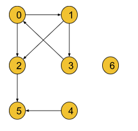
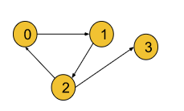
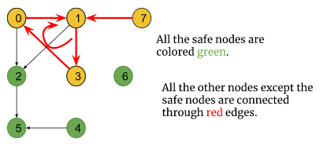
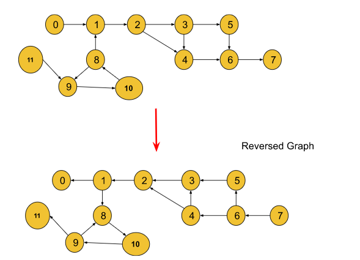

Problem Statement: A directed graph of V vertices and E edges is given in the form of an adjacency list adj. Each node of the graph is labeled with a distinct integer in the range 0 to V - 1. A node is a terminal node if there are no outgoing edges. A node is a safe node if every possible path starting from that node leads to a terminal node. You have to return an array containing all the safe nodes of the graph. The answer should be sorted in ascending order.
Example 1:
Input Format: N = 7, E = 7
Result: {2 4 5 6}
Explanation: Here terminal nodes are 5 and 6 as they
have no outgoing edges.
From node 0: two paths are there 0->2->5 and 0->1->3->0.
The second path does not end at a terminal node.
So it is not a safe node.
From node 1: two paths exist: 1->3->0->1 and 1->2->5.
But the first one does not end at a terminal node.
So it is not a safe node.
From node 2: only one path: 2->5 and 5 is a terminal
node. So it is a safe node.
From node 3: two paths: 3->0->1->3 and 3->0->2->5 but
the first path does not end at a terminal node.
So it is not a safe node.
From node 4: Only one path: 4->5 and 5 is a terminal node.
So it is also a safe node.
From node 5: It is a terminal node. So it is a safe node
as well.
From node 6: It is a terminal node.
So it is a safe node as well.
Example 2:
Input Format: N = 4, E = 4
Result: {3}
Explanation: Node 3 itself is a terminal node and it
is a safe node as well. But all the paths from other
nodes do not lead to a terminal node. So they are
excluded from the answer.
Disclaimer: Don't jump directly to the solution, try it out yourself first.
A terminal node is a node without any outgoing edges(i.e outdegree = 0). Now a node is considered to be a safe node if all possible paths starting from it lead to a terminal node. Here we need to find out all safe nodes and return them sorted in ascending order. If we closely observe, all possible paths starting from a node are going to end at some terminal node unless there exists a cycle and the paths return back to themselves. Let’s understand it considering the below graph:

In the above graph, there exists a cycle i.e 0->1->3->0, and node 7 is connected to the cycle with an incoming edge towards the cycle.
Some paths starting from these nodes are definitely going to end somewhere in the cycle and not at any terminal node. So, these nodes are not safe nodes.
Though node 2 is connected to the cycle, the edge is directed outwards the cycle and all the paths starting from it lead to the terminal node 5. So, it is a safe node and the rest of the nodes (4, 5, 6) are safe nodes as well.
So, the intuition is to figure out the nodes which are neither a part of a cycle nor connected to the cycle. We have previously solved this problem using the DFS traversal technique. Now, we are going to solve it using the BFS traversal technique especially using the topological sort algorithm. The topological sort algorithm will automatically exclude the nodes which are either forming a cycle or connected to a cycle. Note: Points to remember that any node which is a part of a cycle or leads to the cycle through an incoming edge towards the cycle, cannot be a safe node. Apart from these types of nodes, every node is a safe node.
Approach:
The node with outdegree 0 is considered to be a terminal node but the topological sort algorithm deals with the indegrees of the nodes. So, to use the topological sort algorithm, we will reverse every edge of the graph. Now, the nodes with indegree 0 become the terminal nodes. After this step, we will just follow the topological sort algorithm as it is.

We will apply the BFS(Breadth First Search) traversal technique. Breadth First Search or BFS is a traversal technique where we visit the nodes level-wise, i.e., it visits the same level nodes simultaneously, and then moves to the next level.
Initial Configuration:
Indegree Array: Initially all elements are set to 0. Then, We will count the incoming edges for a node and store it in this array. For example, if indegree of node 3 is 2, indegree[3] = 2. If you don’t know how to find indegrees, you can refer to the step 2 in the algorithm.
Queue: As we will use BFS, a queue is required. Initially, the node with indegree 0 will be pushed into the queue.
safeNodesarray: Initially empty and is used to store the safe nodes.
The algorithm steps are as follows:
First, we will reverse all the edges of the graph so that we can apply the topological sort algorithm afterward.
Then, we will calculate the indegree of each node and store it in the indegree array. We can iterate through the given adj list, and simply for every node u->v, we can increase the indegree of v by 1 in the indegree array.
Then, we will push the node(s) with indegree 0 into the queue.
Then, we will pop a node from the queue including the node in our safeNodes array, and for all its adjacent nodes, we will decrease the indegree of that node by one. For example, if node u that has been popped out from the queue has an edge towards node v(u->v), we will decrease indegree[v] by 1.
After that, if for any node the indegree becomes 0, we will push that node again into the queue.
We will repeat steps 3 and 4 until the queue is completely empty. Finally, completing the BFS we will get the linear ordering of the nodes in the safeNodes array.
Finally, the safeNodes array will only consist of the nodes that are neither a part of any cycle nor connected to any cycle. Then we will sort the final safeNodes array as the question requires the answer in sorted order.
Note: If you wish to see the dry run of the above approach, you can watch the video attached to this article.
Code:
#include <bits/stdc++.h>
using namespace std;
class Solution {
public:
vector<int> eventualSafeNodes(int V, vector<int> adj[]) {
vector<int> adjRev[V];
int indegree[V] = {0};
for (int i = 0; i < V; i++) {
// i -> it
// it -> i
for (auto it : adj[i]) {
adjRev[it].push_back(i);
indegree[i]++;
}
}
queue<int> q;
vector<int> safeNodes;
for (int i = 0; i < V; i++) {
if (indegree[i] == 0) {
q.push(i);
}
}
while (!q.empty()) {
int node = q.front();
q.pop();
safeNodes.push_back(node);
for (auto it : adjRev[node]) {
indegree[it]--;
if (indegree[it] == 0) q.push(it);
}
}
sort(safeNodes.begin(), safeNodes.end());
return safeNodes;
}
};
int main() {
vector<int> adj[12] = {{1}, {2}, {3, 4}, {4, 5}, {6}, {6}, {7}, {}, {1, 9}, {10},
{8}, {9}
};
int V = 12;
Solution obj;
vector<int> safeNodes = obj.eventualSafeNodes(V, adj);
for (auto node : safeNodes) {
cout << node << " ";
}
cout << endl;
return 0;
}
Output : 0 1 2 3 4 5 6 7
Time Complexity: O(V+E)+O(N*logN), where V = no. of nodes and E = no. of edges. This is a simple BFS algorithm. Extra O(N*logN) for sorting the safeNodes array, where N is the number of safe nodes.
Space Complexity: O(N) + O(N) + O(N) ~ O(3N), O(N) for the indegree array, O(N) for the queue data structure used in BFS(where N = no.of nodes), and extra O(N) for the adjacency list to store the graph in a reversed order.
import java.util.*;
class Solution {
List<Integer> eventualSafeNodes(int V, List<List<Integer>> adj) {
List<List<Integer>> adjRev = new ArrayList<>();
for (int i = 0; i < V; i++) {
adjRev.add(new ArrayList<>());
}
int indegree[] = new int[V];
for (int i = 0; i < V; i++) {
// i -> it
// it -> i
for (int it : adj.get(i)) {
adjRev.get(it).add(i);
indegree[i]++;
}
}
Queue<Integer> q = new LinkedList<>();
List<Integer> safeNodes = new ArrayList<>();
for (int i = 0; i < V; i++) {
if (indegree[i] == 0) {
q.add(i);
}
}
while (!q.isEmpty()) {
int node = q.peek();
q.remove();
safeNodes.add(node);
for (int it : adjRev.get(node)) {
indegree[it]--;
if (indegree[it] == 0) q.add(it);
}
}
Collections.sort(safeNodes);
return safeNodes;
}
}
public class tUf {
public static void main(String[] args) {
int V = 12;
List<List<Integer>> adj = new ArrayList<>();
for (int i = 0; i < V; i++) {
adj.add(new ArrayList<>());
}
adj.get(0).add(1);
adj.get(1).add(2);
adj.get(2).add(3);
adj.get(2).add(4);
adj.get(3).add(4);
adj.get(3).add(5);
adj.get(4).add(6);
adj.get(5).add(6);
adj.get(6).add(7);
adj.get(8).add(1);
adj.get(8).add(9);
adj.get(9).add(10);
adj.get(10).add(8);
adj.get(11).add(9);
Solution obj = new Solution();
List<Integer> safeNodes = obj.eventualSafeNodes(V, adj);
for (int node : safeNodes) {
System.out.print(node + " ");
}
System.out.println("");
}
}
Output : 0 1 2 3 4 5 6 7
Time Complexity: O(V+E)+O(N*logN), where V = no. of nodes and E = no. of edges. This is a simple BFS algorithm. Extra O(N*logN) for sorting the safeNodes array, where N is the number of safe nodes.
Space Complexity: O(N) + O(N) + O(N) ~ O(3N), O(N) for the indegree array, O(N) for the queue data structure used in BFS(where N = no.of nodes), and extra O(N) for the adjacency list to store the graph in a reversed order.
Special thanks to KRITIDIPTA GHOSH for contributing to this article on takeUforward. If you also wish to share your knowledge with the takeUforward fam, please check out this article. If you want to suggest any improvement/correction in this article please mail us at write4tuf@gmail.com